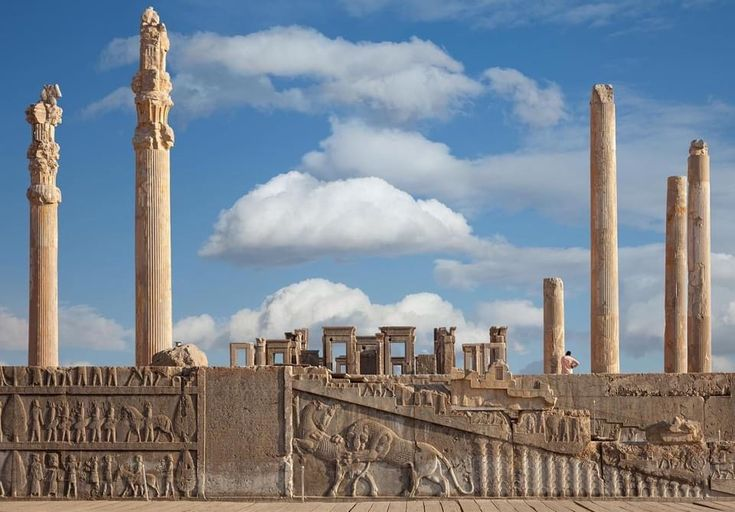
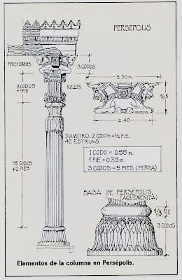

Arquitectura
El ejército del Imperio aqueménida fue uno de los pilares fundamentales que permitió su expansión, consolidación y control de un vasto territorio multinacional. Su estructura, táctica, diversidad y logística lo convirtieron en una fuerza militar sin precedentes en la Antigüedad. A continuación se expone un estudio extenso sobre su organización, unidades, estrategia, armamento, logística, entrenamiento, y evolución a lo largo del tiempo.
La arquitectura del Imperio aqueménida (c. 550–330 a.C.), también conocida como persa aqueménida, fue una expresión monumental del poder y la sofisticación de una de las civilizaciones más vastas del mundo antiguo. Influida por tradiciones mesopotámicas, elamitas, medas y egipcias, esta arquitectura desarrolló un estilo único, especialmente visible en sus complejos palaciegos y ceremoniales. A continuación te doy una descripción extensa de sus características, principales ejemplos y elementos constructivos.
Características generales de la arquitectura aqueménida
1. Monumentalidad y simetría:
Los edificios aqueménidas eran de gran escala, reflejando el poder del imperio y la figura del "rey de reyes". La simetría y la planificación axial eran fundamentales. Los planos se organizaban en torno a patios y plataformas elevadas.
2. Materiales de construcción:
Se utilizaba piedra caliza, especialmente en Persépolis. Adobe y ladrillo cocido eran frecuentes en regiones menos rocosas. Uso de madera de cedro del Líbano, ébano de la India y oro como elementos decorativos.3. Columnas elevadas y capiteles decorativos:
Las columnas, muy altas, eran de piedra tallada con capiteles dobles en forma de toros, leones o grifos. Estos animales sostenían el entablamento, una idea simbólica de poder, vigilancia y protección.4. Escalinatas y relieves:
El acceso a los complejos se realizaba mediante amplias escalinatas de pendiente suave, pensadas incluso para que jinetes subieran a caballo. Los relieves en muros y escalinatas representaban procesiones, delegaciones de pueblos sometidos, soldados y figuras mitológicas.5. Influencias multiculturales:
La arquitectura aqueménida fusionó elementos asirios (relieves narrativos), egipcios (columnas con forma de lotos), urartianos y griegos (orden y proporciones).
Principales construcciones
1. Persépolis (Fundada por Darío I, ampliada por Jerjes I y Artajerjes I)
Ubicada en el actual Irán, fue el centro ceremonial del imperio.
Apadana: Gran sala de audiencias con 72 columnas de más de 20 metros de altura.
Puerta de las Naciones: Entrada flanqueada por estatuas de toros alados.
Tesoro real: Lugar donde se almacenaban riquezas y tributos del imperio.
Relieves: Representaciones de pueblos tributarios en filas, ricamente vestidos y portando ofrendas.
2. Pasargada (Capital fundada por Ciro el Grande)
Muestra un estilo arquitectónico más primitivo y sobrio.
Palacios residenciales: Con patios y jardines irrigados artificialmente.
Tumba de Ciro el Grande: Estructura en forma de casa con techado a dos aguas, sobre una plataforma escalonada.
3. Susa
Fue capital administrativa bajo Darío I.
El palacio de Susa fue decorado con ladrillos vidriados y relieves de gran calidad, como los inmortales, la guardia élite persa.
Elementos arquitectónicos destacados
Apadana: Gran sala hipóstila usada para audiencias reales. Iwanes: Aunque más desarrollados en épocas posteriores (parta y sasánida), ya se vislumbran estructuras precursoras. Jardines reales (paridaeza): De diseño geométrico, dieron origen al concepto de “paraíso”. Terrazas elevadas: Sobre las que se construían los complejos palaciegos, separándolos del terreno común.Legado de la arquitectura aqueménida
El estilo aqueménida influyó en la arquitectura posterior del Cercano Oriente, el mundo helenístico y el arte islámico. Los elementos decorativos (capiteles, relieves y composiciones simbólicas) se retomaron en épocas partas, sasánidas e incluso en la arquitectura moderna iraní. Fue un símbolo de unidad imperial, pues integraba a las distintas culturas sometidas bajo una estética común.| Pasargada | Construcción | Persépolis | Susa | Naqsh-e Rustam |
|---|---|---|---|---|
| Tumba de Ciro | Palacio P | Apadana | Palacio Real | Tumbas Reales |
1. Pasargada (Capital de Ciro el Grande)
Ubicada en el suroeste de Irán, fue la primera capital del imperio.Tumba de Ciro el Grande:
Monumento funerario de piedra caliza.
Consta de una cámara sobre una base escalonada de seis niveles.
Inspiración de arquitectura mesopotámica y anatolia.
Palacio P:
Palacio residencial de Ciro.
Tenía una sala hipóstila con columnas y patios abiertos.
Palacio S (Sala de Audiencias):
Usado para recepciones oficiales.
Decorado con relieves de figuras aladas.
Jardines reales (paridaeza):
Primer ejemplo del jardín persa, organizado geométricamente con canales de irrigación.
- Tumba de Ciro el Grande: Consta de una cámara sobre una base escalonada de seis niveles..
- Palacio residencial de Ciro.Tenía una sala hipóstila con columnas y patios abiertos. .
- Jardines reales (paridaeza) Primer ejemplo del jardín persa, organizado geométricamente con canales de irrigación.
- palasio S Usado para recepciones oficiales.
2. Persépolis (Centro ceremonial del Imperio)
Fundada por Darío I y ampliada por Jerjes I y Artajerjes I. Apadana: Gran sala de audiencias de Darío I. Tenía 72 columnas monumentales, muchas con capiteles de toros dobles. Puerta de las Naciones (de Jerjes I): Entrada ceremonial al complejo. Flanqueada por estatuas de toros alados. Palacio de Darío I: Residencia privada del rey. Decorado con relieves de nobles y guardias. Palacio de Jerjes I: Más grande que el de su padre, usado para recepciones formales. Tesoro Real: Almacenaba riquezas y tributos del imperio. Constaba de grandes cámaras subterráneas. Sala del Trono o Salón de las Cien Columnas: Usado para ceremonias imperiales. Una de las estructuras techadas más grandes del mundo antiguo.3. Susa (Centro administrativo y residencial)
Reformada por Darío I para convertirla en capital alterna. Palacio de Susa: Decorado con ladrillos vidriados policromados. Famoso por el friso de los Inmortales (guardia real). Inspiración mesopotámica y elamita en diseño y materiales. Residencias reales: Alojamiento de la nobleza persa y funcionarios.4. Ecbatana (Capital de verano)
Situada en el noroeste de Irán (actual Hamadán), era la antigua capital meda. Palacio fortificado: Utilizado por los reyes como refugio de verano. Aunque no se han conservado muchos restos, las fuentes griegas lo describen como decorado con oro y plata.5. Naqsh-e Rustam (Necrópolis real cerca de Persépolis)
Tumbas de los reyes aqueménidas (Darío I, Jerjes I, Artajerjes I y Darío II): Esculpidas en acantilados. Fachadas talladas imitando los palacios reales. Relieves que muestran al rey adorando al dios supremo (Ahura Mazda) sobre una plataforma sostenida por figuras humanas (representación de los pueblos del imperio).6. Otros sitios relevantes
Canales, presas y obras hidráulicas: Darío I ordenó la construcción de un canal entre el Nilo y el mar Rojo. Se desarrollaron sistemas de riego (qanats) por todo el imperio. Red de caminos reales: Más de 2.500 km, conectando Susa con Sardes (en Lidia, actual Turquía).